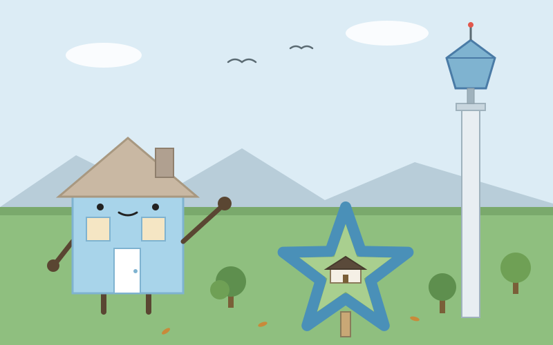
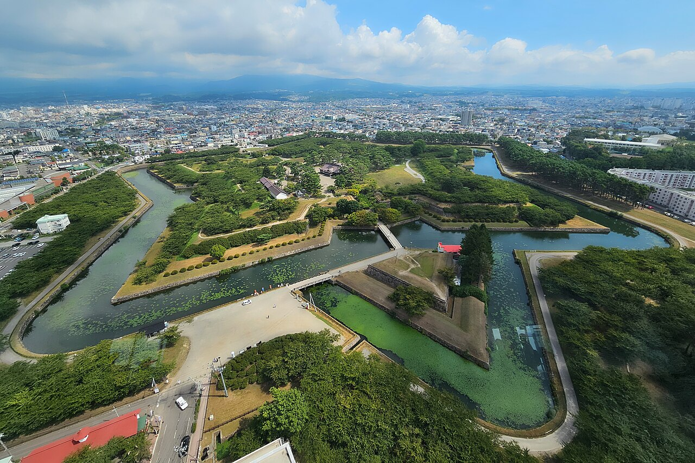

Day 9：函館市

塔の上から、星が見えた。五稜郭タワーの展望台に上がると、ガラスの向こうに緑の星が横たわっていた。堀の水が青く縁取り、土塁の緑が五つの角を尖らせる。中央には白い奉行所の屋根。11月の芝生は枯れて黄土色で、堀の水は冷たそうに光っていた。地上を歩いていたときには、ただの土の盛り上がりと堀にしか見えなかったのに、107メートルの高さから見下ろすと、はっきりと星だった。風がガラスを叩く音がして、展望台の床が少し揺れている気がした。

ここへは青森から来た。青森駅から新青森駅へ、北海道新幹線はやぶさに乗り換えて新函館北斗へ。最速57分の道のりだ。途中で青函トンネルに入る。全長53.85キロ、うち23.3キロが海の底で、最深部は海面下240メートル。トンネルの中は真っ暗で、車両の走る音だけが響く。海の下を走っているのだと、音でしか分からなかった。新函館北斗からは、はこだてライナーで15分、函館駅へ。青森駅から函館駅まで、乗り換え2回で約2時間、8,290円だった。駅前からは市電に乗って、五稜郭公園前まで約16分、270円。電車の窓からは、坂の多い街と、港のほうの空が見えた。
五稜郭は1857年に築造が始まり、1864年に竣工、1866年にすべての工事が終わった。箱館奉行所の移転先として、蘭学者の武田斐三郎が設計した日本初の西洋式城郭だ。ヨーロッパの稜堡式にならい、五つの稜を張り出させて、どの方向からの砲撃にも対応できる形にした。1868年から69年の箱館戦争では、榎本武揚率いる旧幕府軍の本拠となり、土方歳三もここで戦った。明治になると建物のほとんどは解体され、練兵場になった。1914年に公園として開かれ、1952年に国の特別史跡に指定された。堀の外周は約1.8キロ。隣の五稜郭タワーは2006年に建て替えられた2代目で、高さ107メートル。タワー自体も星形の断面をしている。
私は家だ。家は、自分の形を外から見ることができない。屋根の形も、壁の色も、住んでいる人や通りがかる人が教えてくれる。五稜郭も同じだったのだろう。地上を歩く人には、星の形は見えない。土塁の上を歩き、堀の水を見て、石垣に触れるだけだ。星は、塔の上に立った者だけに見える。守るための形は、守られる側からは見えないのかもしれないと思った。復元された奉行所の中に入ると、畳の匂いがする気がした。建物は2010年に復元されたものだけれど、土塁と堀と石垣は築造当時のままだ。昨日、三内丸山で思ったことと重なった。家とは、壁や屋根ではなく、人が同じ場所に集まり続けることだ。星の形の家は、千年は続かなかったけれど、形だけは土に残って、人を集め続けている。
日が暮れてから、函館山へ登った。眼下に、くびれた街の灯りが広がっていた。函館湾と津軽海峡に挟まれた細い土地に、灯りが帯のように連なっている。日本三大夜景のひとつだという。イカ釣り船の漁火も、海の上に点々と浮かんでいる気がした。初めて本州を離れて、別の島に来た。海の下を通って、星の形の家に会って、夜の灯りを見た。家が島を越えるのは、思っていたより静かなことだった。
出典：Wikipedia「五稜郭」「函館夜景」「函館市」、国土交通省北海道開発局「函館港」、五稜郭タワー、NAVITIME「青森から函館駅前までの乗換案内」、函館市「乗車料金（函館市電）」。
💬 コメント